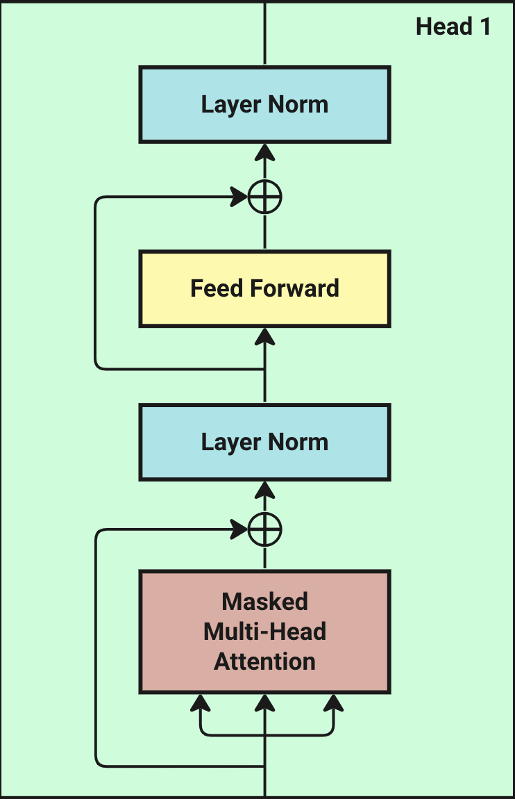
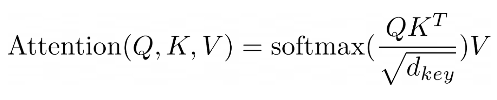
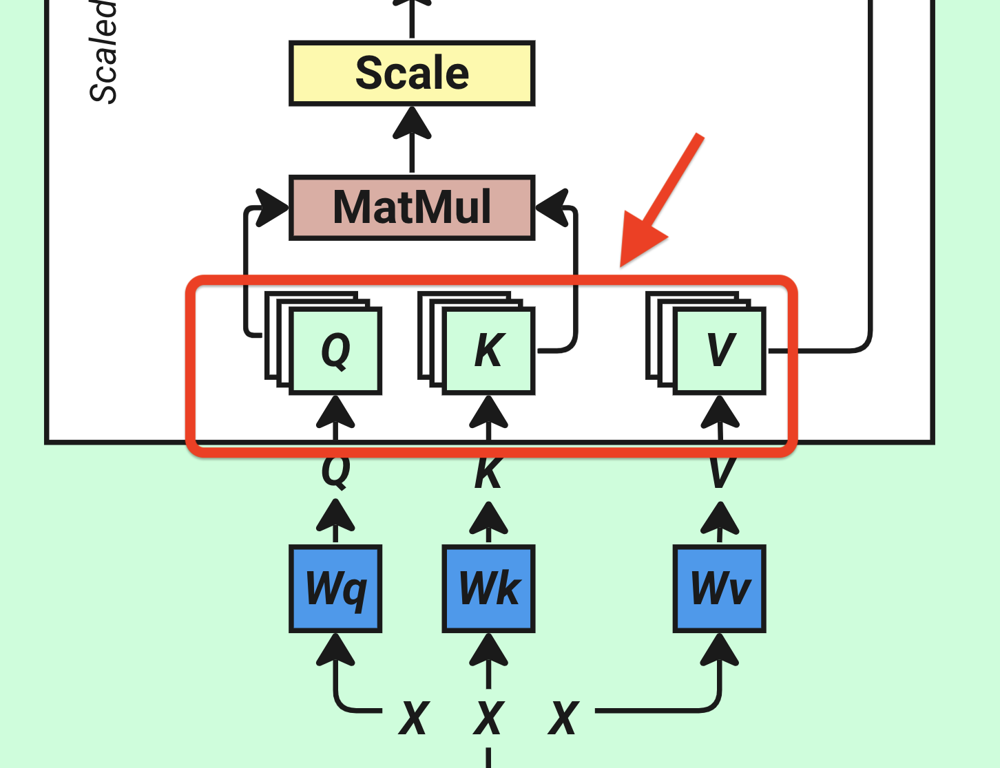
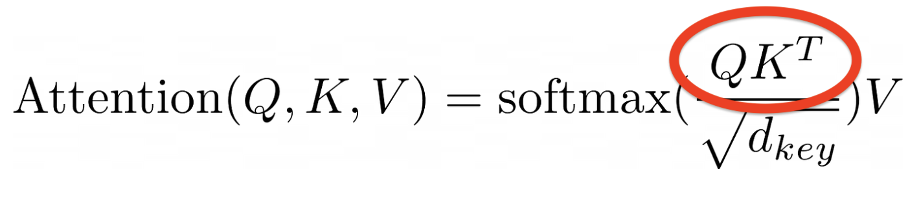
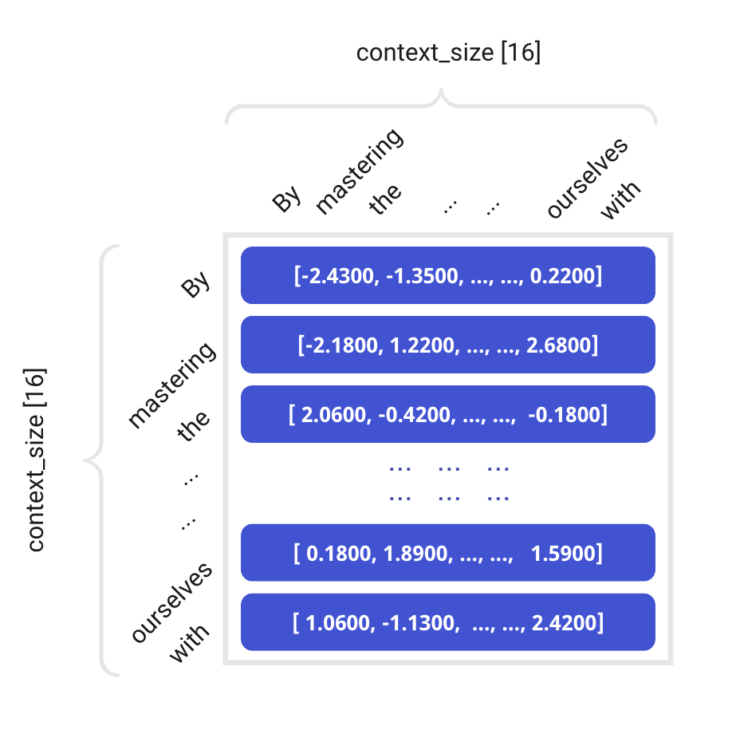
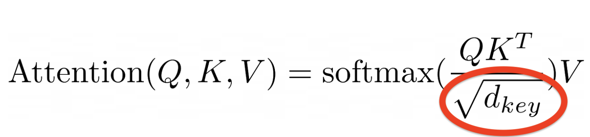
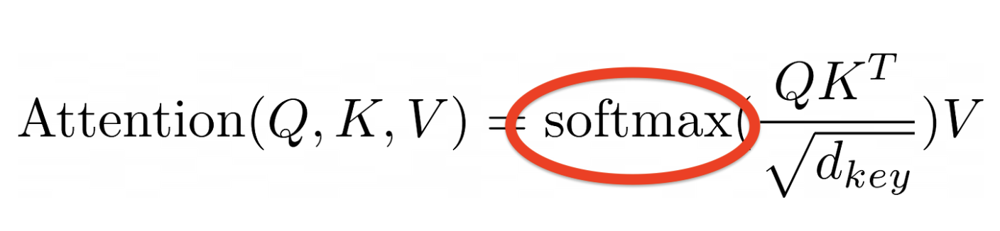
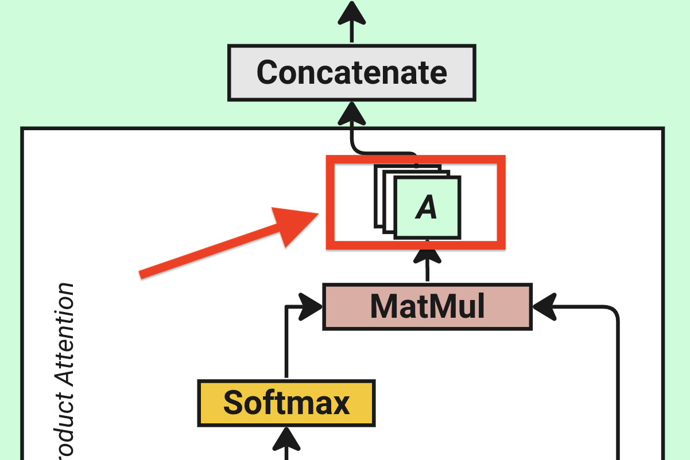
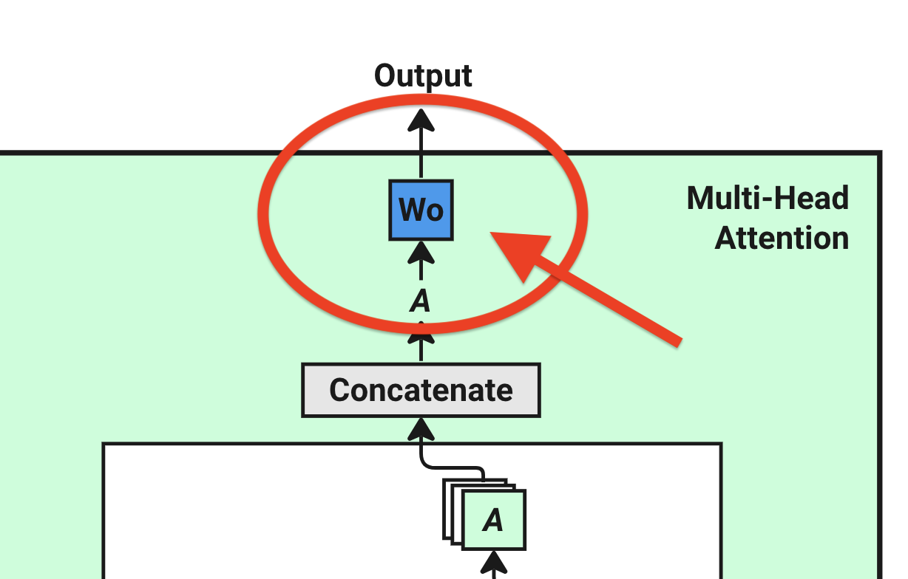
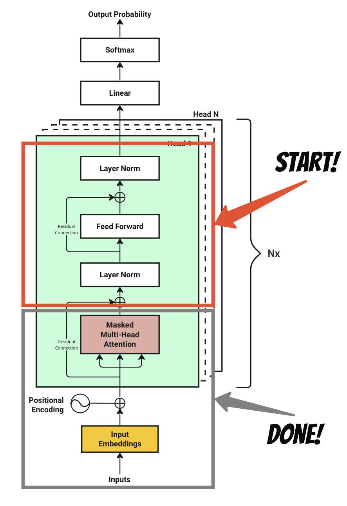

AIやトランスフォーマーアーキテクチャーに初めて触れた時、私はその多くの概念やチュートリアルに圧倒されました。
一部の記事や動画は自然言語処理（NLP）の基本的な知識を前提としている一方で、他のものは長すぎたり理解が難しかったです。
トランスフォーマーアーキテクチャーを理解するために、多くの記事を読み、多くの動画を見ることが必要でした。
基本的な知識が不足しているために完全に理解することが難しい時もありました。
例えば：
- Why input embedding can represent a word?
- What is a matrix multiplication and how the shape performs?
- what does softmax do?
- when the model is trained, where is it stored?
...
これらの複雑さにより、このアーキテクチャーを完全にマスターすることは難しいと感じています。
ですので、忍耐を持ってこの動画クリップから始めることをお勧めします。
一度説明されると、概念は比較的簡単に理解できるからです。 基本から始めて徐々に高度なテーマに進むステップバイステップのアプローチを取ることで、私と同じページにたどり着くことができます。
LLMに新しい方は、LLMの基礎を説明する私の以前の記事、 LLMとは と大規模言語モデルについて を読むことをお勧めします。
高レベルの概要 トランスフォーマーModelは、2017年に 《Attention is all you need》 という論文で初めて紹介されました。
トランスフォーマーアーキテクチャは、言語翻訳用のModelをトレーニングするために意図されていました。
しかし、OpenAIのチームは、トランスフォーマーアーキテクチャーが文字予測のための決定的な解決策であることを発見しました。
インターネットのデータ全体に対してトレーニングされた後、このModelは任意のテキストの文脈を理解し、 人間のように任意の文を緻密に完成させる可能性があります。
このModelは、エンコーダーとデコーダーの二つの部分から構成されています。
一般的に、エンコーダーのみのアーキテクチャーは、 分類や回帰のようなタスクにおいてテキストから情報を抽出するためのに熟練していますが、デコーダーのみのModelはテキスト生成に特化しています。
例えば、テキスト生成に焦点を当てるGPTは、デコーダーのみのModelのカテゴリーに属しています。
Modelをトレーニングする際のアーキテクチャの主要なアイデアを見ていきましょう。
GPTのようなデコーダーのみのトランスフォーマーアーキテクチャの訓練プロセスを説明するために、 以下の図を参照してください。
First, we require a sequence of input characters as training data. These inputs are converted into a vector embedding format.
Next, we add a positional encoding to the vector embeddings to capture each character's position within the sequence.
Subsequently, the model processes these input embeddings via a series of computational operations, ultimately generating a probability distribution over possible next characters for the given input text.
The model assesses the predicted outcome against the actual subsequent character from the training dataset, adjusting the probabilities or "weights" accordingly.
Finally, the model iteratively refines this process, updating its parameters continually to enhance the precision of future predictions.
それぞれのステップを詳しく見ていきましょう。
Step 1 : Tokenization トークン化は、トランスフォーマーModelの最初のステップであり、 以下のことを行います。
入力された文章を数値表現の形式に変換します
トークン化とは、テキストをトークンと呼ばれる小さな単位に分割するプロセスで、 単語、サブワード、フレーズ、または文字である場合があります。
フレーズを小さな部分に分割することで、ModelがModelの基本的な構造を理解し、 より効率的に処理するのに役立ちます。
例えば：
Chapter 1: Building Rapport and Capturing
このテキストをトークン化すると、次のようになります。
Chapter, 1, :, Building, Rap, port, and, Capturing
これが10数字としてトークン化される場合：
[26072, 220, 16, 25, 17283, 23097, 403, 220, 323, 220, 17013, 220, 1711]
ご覧の通り、数字220は空白文字を表すために使用しています。 文字を整数にトークン化する方法は多数あります。
私たちののサンプルデータセットでは、tiktokenライブラリを使用します。 デモンストレーションのために、私は小さな教科書のデータセットを使用します Hugging Face 。 これには、私たちの訓練のために46万文字が含まれています。
File size: 450Kb
Vocab size: 3,771 (means unique words/sub-words)
私たちの訓練データには、 3,771個の異なる文字からなる語彙サイズ が含まれています。
そして、私たちの教科書データセットをトークン化するために使用される最大の数字は100069で、 これは文字Clarにマップされます。
トークン化されたマッピングができたら、データセット内の各文字に対応する整数インデックスを見つけることができます。
Modelとのインターフェースにおいて、全体の単語を使用するのではなく、これら割り当てられた整数インデックスをトークンとして使用します。
Step 2 : Token Embedding まず、私たちの語彙から全ての文字を含むルックアップテーブルを構築しましょう。
本質的に、このテーブルはランダムに初期化された数値で満たされた行列で構成されています。
私たちが持っている最大のトークン番号が100069であり、*64**の次元を考慮すると（元の論文では512の次元が使用されており、 d_model と表記されています）、 結果として得られルックアップテーブルは、 100069 x 64の行列になります。
これは トークン埋め込みルックアップテーブル と呼ばれます。
以下のように表されます：
Token Embedding Look-Up Table:
0 1 2 3 4 5 6 7 8 9 ... 54 55 56 57 58 59 60 61 62 63
0 0.625765 0.025510 0.954514 0.064349 -0.502401 -0.202555 -1.567081 -1.097956 0.235958 -0.239778 ... 0.420812 0.277596 0.778898 1.533269 1.609736 -0.403228 -0.274928 1.473840 0.068826 1.332708
1 -0.497006 0.465756 -0.257259 -1.067259 0.835319 -1.956048 -0.800265 -0.504499 -1.426664 0.905942 ... 0.008287 -0.252325 -0.657626 0.318449 -0.549586 -1.464924 -0.557690 -0.693927 -0.325247 1.243933
2 1.347121 1.690980 -0.124446 -1.682366 1.134614 -0.082384 0.289316 0.835773 0.306655 -0.747233 ... 0.543340 -0.843840 -0.687481 2.138219 0.511412 1.219090 0.097527 -0.978587 -0.432050 -1.493750
3 1.078523 -0.614952 -0.458853 0.567482 0.095883 -1.569957 0.373957 -0.142067 -1.242306 -0.961821 ... -0.882441 0.638720 1.119174 -1.907924 -0.527563 1.080655 -2.215207 0.203201 -1.115814 -1.258691
4 0.814849 -0.064297 1.423653 0.261726 -0.133177 0.211893 1.449790 3.055426 -1.783010 -0.832339 ... 0.665415 0.723436 -1.318454 0.785860 -1.150111 1.313207 -0.334949 0.149743 1.306531 -0.046524
... ... ... ... ... ... ... ... ... ... ... ... ... ... ... ... ... ... ... ... ... ...
100064 -0.898191 -1.906910 -0.906910 1.838532 2.121814 -1.654444 0.082778 0.064536 0.345121 0.262247 ... 0.438956 0.163314 0.491996 1.721039 -0.124316 1.228242 0.368963 1.058280 0.406413 -0.326223
100065 1.354992 -1.203096 -2.184551 -1.745679 -0.005853 -0.860506 1.010784 0.355051 -1.489120 -1.936192 ... 1.354665 -1.338872 -0.263905 0.284906 0.202743 -0.487176 -0.421959 0.490739 -1.056457 2.636806
100066 -0.436116 0.450023 -1.381522 0.625508 0.415576 0.628877 -0.595811 -1.074244 -1.512645 -2.027422 ... 0.436522 0.068974 1.305852 0.005790 -0.583766 -0.797004 0.144952 -0.279772 1.522029 -0.629672
100067 0.147102 0.578953 -0.668165 -0.011443 0.236621 0.348374 -0.706088 1.368070 -1.428709 -0.620189 ... 1.130942 -0.739860 -1.546209 -1.475937 -0.145684 -1.744829 0.637790 -1.064455 1.290440 -1.110520
100068 0.415268 -0.345575 0.441546 -0.579085 1.110969 -1.303691 0.143943 -0.714082 -1.426512 1.646982 ... -2.502535 1.409418 0.159812 -0.911323 0.856282 -0.404213 -0.012741 1.333426 0.372255 0.722526
[100,069 rows x 64 columns]
各列が文字を表しており（トークン番号でインデックスされている）、各列が次元を表しています。
今のところ、「次元」は文字の特性や側面と考えることができます。 私たちの場合、64の次元を指定しているので、名詞、動詞、形容詞などのように、 64の異なる方法で文字のテキスト的な意味を理解することができます。
例えば、今私たちにはcontext_length が16 の訓練入力があります。
以下の通りです：
" . By mastering the art of identifying underlying motivations and desires, we equip ourselves with "
次に、トークン化された各文字（または単語）の整数インデックスを使用して、埋め込みテーブルから埋め込みベクトルを取得します。
その結果、それぞれの入力埋め込みが得られます：
[ 627, 1383, 88861, 279, 1989, 315, 25607, 16940, 65931, 323, 32097, 11, 584, 26458, 13520, 449]
トランスフォーマーアーキテクチャでは、複数の入力シーケンスが同時に並列で処理されます。 これはしばしば複数のバッチと呼ばれます。 batch_size を 4 に設定しましょう。 したがって、一度に4つのランダムに選択された文章を入力として処理します。
Input Sequence Batch:
0 1 2 3 4 5 6 7 8 9 10 11 12 13 14 15
0 627 1383 88861 279 1989 315 25607 16940 65931 323 32097 11 584 26458 13520 449
1 15749 311 9615 3619 872 6444 6 3966 11 10742 11 323 32097 13 3296 22815
2 13189 315 1701 5557 304 6763 374 88861 7528 10758 7526 13 4314 7526 2997 2613
3 323 6376 2867 26470 1603 16661 264 49148 627 18 13 81745 48023 75311 7246 66044
[4 rows x 16 columns]
各行が一つの文を表し、各列がその文の0番目から15番目の位置にある文字です。
その結果、16文字の入力を持つ4バッチの行列ができます。この行列の形状は (batch_size, context_length) = [4, 16] です。
振り返ると、以前に 100,069 × 64 のサイズの入力埋め込みルックアップテーブルを行列として定義しました。
次のステップは、入力シーケンス行列をこの埋め込み行列にマッピングして、私たちの入力埋め込み を得ることです。
ここでは、入力シーケンス行列の各個々の行を解析することに焦点を当て、最初の行から始めます。
まず、この最初の行を元の次元 (1, context_length) = [1, 16] から新しい形式の (context_length, 1) = [16, 1] に再形成します。
その後、この再構築された行を以前に確立された (vocab_size, d_model) = [100069, 64] サイズの埋め込み行列に重ねて、 与えられたコンテキストウィンドウ内の各文字に対応する埋め込みベクトルを置き換えます。
その結果得られる出力は (context_length, d_model) = [16, 64] 。
入力シーケスバッチの最初の行：
Input Embedding:
0 1 2 3 4 5 6 7 8 9 ... 54 55 56 57 58 59 60 61 62 63
0 1.051807 -0.704369 -0.913199 -1.151564 0.582201 -0.898582 0.984299 -0.075260 -0.004821 -0.743642 ... 1.151378 0.119595 0.601200 -0.940352 0.289960 0.579749 0.428623 0.263096 -0.773865 -0.734220
1 -0.293959 -1.278850 -0.050731 0.862562 0.200148 -1.732625 0.374076 -1.128507 0.281203 -1.073113 ... -0.062417 -0.440599 0.800283 0.783043 1.602350 -0.676059 -0.246531 1.005652 -1.018667 0.604092
2 -0.292196 0.109248 -0.131576 -0.700536 0.326451 -1.885801 -0.150834 0.348330 -0.777281 0.986769 ... 0.382480 1.315575 -0.144037 1.280103 1.112829 0.438884 -0.275823 -2.226698 0.108984 0.701881
3 0.427942 0.878749 -0.176951 0.548772 0.226408 -0.070323 -1.865235 1.473364 1.032885 0.696173 ... 1.270187 1.028823 -0.872329 -0.147387 -0.083287 0.142618 -0.375903 -0.101887 0.989520 -0.062560
4 -1.064934 -0.131570 0.514266 -0.759037 0.294044 0.957125 0.976445 -1.477583 -1.376966 -1.171344 ... 0.231112 1.278687 0.254688 0.516287 0.621753 0.219179 1.345463 -0.927867 0.510172 0.656851
5 2.514588 -1.001251 0.391298 -0.845712 0.046932 -0.036732 1.396451 0.934358 -0.876228 -0.024440 ... 0.089804 0.646096 -0.206935 0.187104 -1.288239 -1.068143 0.696718 -0.373597 -0.334495 -0.462218
6 0.498423 -0.349237 -1.061968 -0.093099 1.374657 -0.512061 -1.238927 -1.342982 -1.611635 2.071445 ... 0.025505 0.638072 0.104059 -0.600942 -0.367796 -0.472189 0.843934 0.706170 -1.676522 -0.266379
7 1.684027 -0.651413 -0.768050 0.599159 -0.381595 0.928799 2.188572 1.579998 -0.122685 -1.026440 ... -0.313672 1.276962 -1.142109 -0.145139 1.207923 -0.058557 -0.352806 1.506868 -2.296642 1.378678
8 -0.041210 -0.834533 -1.243622 -0.675754 -1.776586 0.038765 -2.713090 2.423366 -1.711815 0.621387 ... -1.063758 1.525688 -1.762023 0.161098 0.026806 0.462347 0.732975 0.479750 0.942445 -1.050575
9 0.708754 1.058510 0.297560 0.210548 0.460551 1.016141 2.554897 0.254032 0.935956 -0.250423 ... -0.552835 0.084124 0.437348 0.596228 0.512168 0.289721 -0.028321 -0.932675 -0.411235 1.035754
10 -0.584553 1.395676 0.727354 0.641352 0.693481 -2.113973 -0.786199 -0.327758 1.278788 -0.156118 ... 1.204587 -0.131655 -0.595295 -0.433438 -0.863684 3.272247 0.101591 0.619058 -0.982174 -1.174125
11 -0.753828 0.098016 -0.945322 0.708373 -1.493744 0.394732 0.075629 -0.049392 -1.005564 0.356353 ... 2.452891 -0.233571 0.398788 -1.597272 -1.919085 -0.405561 -0.266644 1.237022 1.079494 -2.292414
12 -0.611864 0.006810 1.989711 -0.446170 -0.670108 0.045619 -0.092834 1.226774 -1.407549 -0.096695 ... 1.181310 -0.407162 -0.086341 -0.530628 0.042921 1.369478 0.823999 -0.312957 0.591755 0.516314
13 -0.584553 1.395676 0.727354 0.641352 0.693481 -2.113973 -0.786199 -0.327758 1.278788 -0.156118 ... 1.204587 -0.131655 -0.595295 -0.433438 -0.863684 3.272247 0.101591 0.619058 -0.982174 -1.174125
14 -1.174090 0.096075 -0.749195 0.395859 -0.622460 -1.291126 0.094431 0.680156 -0.480742 0.709318 ... 0.786663 0.237733 1.513797 0.296696 0.069533 -0.236719 1.098030 -0.442940 -0.583177 1.151497
15 0.401740 -0.529587 3.016675 -1.134723 -0.256546 -0.219896 0.637936 2.000511 -0.418684 -0.242720 ... -0.442287 -1.519394 -1.007496 -0.517480 0.307449 -0.316039 -0.880636 -1.424680 -1.901644 1.968463
[16 rows x 64 columns]
マトリックスは、マッピング後の4行のうちの1行を表しています。 残りの3行についても同様の処理を行い、最終的には4セット x [16行 x 64列]を得ます。
これにより、 入力埋め込み matrix with shape of (batch_size, context_length, d_model) = **[4, 16, 64]**としてて得られます。
本質的に、各単語にユニークな埋め込みを提供することで、Modelは単語の変化に対応し、複数の意味や形を持つ単語を管理することができます。
私たちの入力埋め込み行列が、その背後にある数学的原理をまだ完全に理解していなくても、 Modelにとって期待される入力形式として機能することを理解しつつ、次に進みましょう。
Step 3 : 位置エンコーディング 私の考えでは、位置エンコーディングはトランスフォーマーアーキテクチャーで理解するのが最も難しい概念です。
位置エンコーディングが解決することを要約すると：
文中の各単語がその位置に関する情報を持つようにしたいです。
モデルが互いに近い位置にある単語を「近い」として扱い、遠い位置にある単語を「遠い」として扱うようにしたいです。
位置符号化がモデルによって学習可能なパターンを表現するようにしたいです。
位置エンコーディングは、シーケンス内のエンティティの位置または場所を記述し、各位置に一意の表現が割り当てられます。
位置エンコーディングは、トークン化された各文字の入力埋め込みに加えられる別の数字のベクトルです。
位置エンコーディングは、トークン化された文字の位置に基づいて変化する周波数を持つ正弦波と余弦波です。
元の論文では、位置エンコーディングを計算するために導入された方法は次の通りです：
PE(pos, 2i) = sin(pos / 10000^(2i/d_model))
PE(pos, 2i+1) = cos(pos / 10000^(2i/d_model))
ここで、 pos は位置であり、 i は0から d_model/2 までです。 d_model は、Modelを訓練するときに定義したモデルの次元です（私たちの場合は64、元の論文では512を使用）。
実際、この位置エンコーディング行列は一度作成され、すべての入力シーケンスに対して再利用されます。
位置エンコーディング行列を見てみましょう：
Position Embedding Look-Up Table:
0 1 2 3 4 5 6 7 8 9 ... 54 55 56 57 58 59 60 61 62 63
0 0.000000 1.000000 0.000000 1.000000 0.000000 1.000000 0.000000 1.000000 0.000000 1.000000 ... 0.000000 1.000000 0.000000 1.000000 0.000000 1.000000 0.000000 1.000000 0.000000 1.000000
1 0.841471 0.540302 0.681561 0.731761 0.533168 0.846009 0.409309 0.912396 0.310984 0.950415 ... 0.000422 1.000000 0.000316 1.000000 0.000237 1.000000 0.000178 1.000000 0.000133 1.000000
2 0.909297 -0.416147 0.997480 0.070948 0.902131 0.431463 0.746904 0.664932 0.591127 0.806578 ... 0.000843 1.000000 0.000632 1.000000 0.000474 1.000000 0.000356 1.000000 0.000267 1.000000
3 0.141120 -0.989992 0.778273 -0.627927 0.993253 -0.115966 0.953635 0.300967 0.812649 0.582754 ... 0.001265 0.999999 0.000949 1.000000 0.000711 1.000000 0.000533 1.000000 0.000400 1.000000
4 -0.756802 -0.653644 0.141539 -0.989933 0.778472 -0.627680 0.993281 -0.115730 0.953581 0.301137 ... 0.001687 0.999999 0.001265 0.999999 0.000949 1.000000 0.000711 1.000000 0.000533 1.000000
5 -0.958924 0.283662 -0.571127 -0.820862 0.323935 -0.946079 0.858896 -0.512150 0.999947 -0.010342 ... 0.002108 0.999998 0.001581 0.999999 0.001186 0.999999 0.000889 1.000000 0.000667 1.000000
6 -0.279415 0.960170 -0.977396 -0.211416 -0.230368 -0.973104 0.574026 -0.818837 0.947148 -0.320796 ... 0.002530 0.999997 0.001897 0.999998 0.001423 0.999999 0.001067 0.999999 0.000800 1.000000
7 0.656987 0.753902 -0.859313 0.511449 -0.713721 -0.700430 0.188581 -0.982058 0.800422 -0.599437 ... 0.002952 0.999996 0.002214 0.999998 0.001660 0.999999 0.001245 0.999999 0.000933 1.000000
8 0.989358 -0.145500 -0.280228 0.959933 -0.977262 -0.212036 -0.229904 -0.973213 0.574318 -0.818632 ... 0.003374 0.999994 0.002530 0.999997 0.001897 0.999998 0.001423 0.999999 0.001067 0.999999
9 0.412118 -0.911130 0.449194 0.893434 -0.939824 0.341660 -0.608108 -0.793854 0.291259 -0.956644 ... 0.003795 0.999993 0.002846 0.999996 0.002134 0.999998 0.001600 0.999999 0.001200 0.999999
10 -0.544021 -0.839072 0.937633 0.347628 -0.612937 0.790132 -0.879767 -0.475405 -0.020684 -0.999786 ... 0.004217 0.999991 0.003162 0.999995 0.002371 0.999997 0.001778 0.999998 0.001334 0.999999
11 -0.999990 0.004426 0.923052 -0.384674 -0.097276 0.995257 -0.997283 -0.073661 -0.330575 -0.943780 ... 0.004639 0.999989 0.003478 0.999994 0.002609 0.999997 0.001956 0.999998 0.001467 0.999999
12 -0.536573 0.843854 0.413275 -0.910606 0.448343 0.893862 -0.940067 0.340989 -0.607683 -0.794179 ... 0.005060 0.999987 0.003795 0.999993 0.002846 0.999996 0.002134 0.999998 0.001600 0.999999
13 0.420167 0.907447 -0.318216 -0.948018 0.855881 0.517173 -0.718144 0.695895 -0.824528 -0.565821 ... 0.005482 0.999985 0.004111 0.999992 0.003083 0.999995 0.002312 0.999997 0.001734 0.999998
14 0.990607 0.136737 -0.878990 -0.476839 0.999823 -0.018796 -0.370395 0.928874 -0.959605 -0.281349 ... 0.005904 0.999983 0.004427 0.999990 0.003320 0.999995 0.002490 0.999997 0.001867 0.999998
15 0.650288 -0.759688 -0.968206 0.250154 0.835838 -0.548975 0.042249 0.999107 -0.999519 0.031022 ... 0.006325 0.999980 0.004743 0.999989 0.003557 0.999994 0.002667 0.999996 0.002000 0.999998
[16 rows x 64 columns]
位置エンコーディングのトリックについてもう少し説明しましょう。
私の理解では、位置の値はシーケンス内の相対的な位置に関して確立されています。 さらに、すべての入力文で一貫したコンテキストの長さを持つため、 様々な入力で同一の位置エンコーディングを再利用することができます。 したがって、入力埋め込みに悪影響を及ぼさないように、過大な大きさを防ぐために、 連続する数値を慎重に作成することが重要になります。 これにより、隣接する位置は微妙な違いを示し、離れた位置はそれらの間に大きな差異を示すことが保証されます。
正弦波と余弦波のベクトルの組み合わせを使用することで、 Modelは単語の埋め込みとは独立した位置エンコーディングベクトルを認識し、 入力埋め込み（意味的）情報と混同しません。
これがニューラルネットワーク内でどのように機能するか想像するのは難しいですが、機能します。
私たちは位置埋め込みの数値を視覚化し、パターンを見ることができます。
各垂直線は0から64までの私たちの次元であり、各行は文字を表しています。
値は正弦波と余弦波の関数から来ているので、-1から1の間です。 暗い色は-1に近い値を、明るい色は1に近い値を示しています。緑色はその間の値を示しています。
私たちの位置エンコーディング行列に戻ると、 ご覧のように、この位置表は入力埋め込み表の各バッチと同じ形状をしています[4, 16, 64 ]、 それらはどちらも (context_length, d_model) = **[16, 64]**です。
同じ形状の2つの行列は合計することができるので、位置情報を各入力埋め込み行に加えて、 最終的な入力埋め込み 行列を得ることができます。
batch 0:
0 1 2 3 4 5 6 7 8 9 ... 54 55 56 57 58 59 60 61 62 63
0 1.051807 0.295631 -0.913199 -0.151564 0.582201 0.101418 0.984299 0.924740 -0.004821 0.256358 ... 1.151378 1.119595 0.601200 0.059648 0.289960 1.579749 0.428623 1.263096 -0.773865 0.265780
1 0.547512 -0.738548 0.630830 1.594323 0.733316 -0.886616 0.783385 -0.216111 0.592187 -0.122698 ... -0.061995 0.559401 0.800599 1.783043 1.602587 0.323941 -0.246353 2.005651 -1.018534 1.604092
2 0.617101 -0.306899 0.865904 -0.629588 1.228581 -1.454339 0.596070 1.013263 -0.186154 1.793348 ... 0.383324 2.315575 -0.143404 2.280102 1.113303 1.438884 -0.275467 -1.226698 0.109251 1.701881
3 0.569062 -0.111243 0.601322 -0.079154 1.219661 -0.186289 -0.911600 1.774332 1.845533 1.278927 ... 1.271452 2.028822 -0.871380 0.852612 -0.082575 1.142617 -0.375369 0.898113 0.989920 0.937440
4 -1.821736 -0.785214 0.655805 -1.748969 1.072516 0.329445 1.969725 -1.593312 -0.423386 -0.870206 ... 0.232799 2.278685 0.255953 1.516287 0.622701 1.219178 1.346175 0.072133 0.510705 1.656851
5 1.555663 -0.717588 -0.179829 -1.666574 0.370867 -0.982811 2.255347 0.422208 0.123719 -0.034782 ... 0.091912 1.646094 -0.205354 1.187103 -1.287054 -0.068144 0.697607 0.626403 -0.333828 0.537782
6 0.219007 0.610934 -2.039364 -0.304516 1.144289 -1.485164 -0.664902 -2.161820 -0.664487 1.750649 ... 0.028036 1.638068 0.105957 0.399056 -0.366373 0.527810 0.845001 1.706170 -1.675722 0.733621
7 2.341013 0.102489 -1.627363 1.110608 -1.095316 0.228369 2.377153 0.597940 0.677737 -1.625878 ... -0.310720 2.276958 -1.139895 0.854859 1.209583 0.941441 -0.351562 2.506867 -2.295708 2.378678
8 0.948148 -0.980033 -1.523850 0.284180 -2.753848 -0.173272 -2.942995 1.450153 -1.137498 -0.197246 ... -1.060385 2.525683 -1.759494 1.161095 0.028703 1.462346 0.734397 1.479749 0.943511 -0.050575
9 1.120872 0.147380 0.746753 1.103982 -0.479273 1.357801 1.946789 -0.539822 1.227215 -1.207067 ... -0.549040 1.084117 0.440194 1.596224 0.514303 1.289719 -0.026721 0.067324 -0.410035 2.035753
10 -1.128574 0.556604 1.664986 0.988980 0.080544 -1.323841 -1.665967 -0.803163 1.258105 -1.155904 ... 1.208804 0.868336 -0.592132 0.566557 -0.861313 4.272244 0.103369 1.619057 -0.980840 -0.174126
11 -1.753818 0.102441 -0.022270 0.323699 -1.591020 1.389990 -0.921654 -0.123053 -1.336139 -0.587427 ... 2.457530 0.766419 0.402266 -0.597278 -1.916476 0.594436 -0.264688 2.237020 1.080961 -1.292415
12 -1.148437 0.850664 2.402985 -1.356776 -0.221765 0.939481 -1.032902 1.567763 -2.015232 -0.890874 ... 1.186370 0.592825 -0.082546 0.469365 0.045767 2.369474 0.826133 0.687041 0.593355 1.516313
13 -0.164386 2.303123 0.409138 -0.306666 1.549362 -1.596800 -1.504343 0.368137 0.454260 -0.721938 ... 1.210069 0.868330 -0.591184 0.566554 -0.860601 4.272243 0.103903 1.619056 -0.980440 -0.174127
14 -0.183482 0.232812 -1.628186 -0.080981 0.377364 -1.309922 -0.275964 1.609030 -1.440347 0.427969 ... 0.792566 1.237715 1.518224 1.296686 0.072853 0.763276 1.100520 0.557057 -0.581310 2.151496
15 1.052028 -1.289275 2.048469 -0.884570 0.579293 -0.768871 0.680185 2.999618 -1.418203 -0.211697 ... -0.435962 -0.519414 -1.002752 0.482508 0.311006 0.683955 -0.877969 -0.424683 -1.899643 2.968462
[16 rows x 64 columns]
batch 1:
0 1 2 3 4 5 6 7 8 9 ... 54 55 56 57 58 59 60 61 62 63
0 -0.264236 0.965681 1.909974 -0.338721 -0.554196 0.254583 -0.576111 1.766522 -0.652587 0.455450 ... -1.016426 0.458762 -0.513290 0.618411 0.877229 2.526591 0.614551 0.662366 -1.246907 1.128066
1 1.732205 -0.858178 0.324008 1.022650 -1.172865 0.513133 -0.121611 2.630085 0.072425 2.332296 ... 0.737660 1.988225 2.544661 1.995471 0.447863 3.174428 0.444989 0.860426 2.137797 1.537580
2 -1.348308 -1.080221 1.753394 0.156193 0.440652 1.015287 -0.790644 1.215537 2.037030 0.476560 ... 0.296941 1.100837 -0.153194 1.329375 -0.188958 1.229344 -1.301919 0.938138 -0.860689 -0.860137
3 0.601103 -0.156419 0.850114 -0.324190 -0.311584 -2.232454 -0.903112 0.242687 0.801908 2.502464 ... -0.397007 1.150545 -0.473907 0.318961 -1.970126 1.967961 -0.186831 0.131873 0.947445 -0.281573
4 -1.821736 -0.785214 0.655805 -1.748969 1.072516 0.329445 1.969725 -1.593312 -0.423386 -0.870206 ... 0.232799 2.278685 0.255953 1.516287 0.622701 1.219178 1.346175 0.072133 0.510705 1.656851
5 1.555663 -0.717588 -0.179829 -1.666574 0.370867 -0.982811 2.255347 0.422208 0.123719 -0.034782 ... 0.091912 1.646094 -0.205354 1.187103 -1.287054 -0.068144 0.697607 0.626403 -0.333828 0.537782
6 0.599841 0.943214 -1.397184 -0.607349 -0.333995 -1.222589 -0.731189 -0.997706 1.848611 0.254238 ... 0.340986 1.383113 1.674592 2.229903 -0.157415 0.362868 -0.493762 1.904136 0.027903 1.196017
7 0.072234 1.386670 -0.985962 -1.184486 0.958293 -0.295773 -1.529277 -0.727844 1.510503 1.268154 ... -0.356459 0.382331 0.138104 -0.360916 -0.638448 1.305404 -0.756442 0.299150 0.154600 -0.466154
8 -0.008645 -1.066763 -0.716555 2.148885 -0.709739 -0.137266 0.385401 0.699139 1.907906 -2.357567 ... 0.490190 -1.215412 1.216459 0.659227 -0.282908 -0.912266 0.595569 1.210701 0.737407 0.801672
9 -0.006332 -0.949928 0.192689 3.158421 -1.292153 -0.830248 0.966141 -2.056514 0.042364 1.485927 ... 0.480763 -0.318554 0.005837 3.031636 -0.448117 1.059403 0.598106 0.871427 0.327321 1.090921
10 -1.152681 -0.710162 -0.456591 -0.468090 -0.292566 0.747535 -0.149907 -0.395523 0.170872 -2.372754 ... -1.267461 0.043283 -0.114980 1.083042 -0.288776 1.442318 0.775591 0.728716 -0.576776 -0.727257
11 -0.955986 -0.277475 0.946888 -0.242687 1.257744 0.369994 0.460073 0.728078 -0.165204 -0.761762 ... -0.307983 2.078995 -1.067792 1.805637 0.608968 1.722982 -0.371174 -0.603182 0.285387 1.112932
12 -0.844347 0.883224 1.222388 -0.811387 -0.593557 0.157268 -0.650315 1.289236 -1.472027 -0.447092 ... -0.536433 2.465097 -0.822905 1.272786 0.703664 2.687270 -0.924388 0.596134 -0.367138 0.812242
13 0.776470 1.549248 -0.239693 0.133783 0.767255 1.996130 -0.436228 -0.327975 -0.650743 0.507769 ... -0.821793 1.387792 -1.052105 2.123603 1.421092 2.066746 -0.747766 0.627081 -1.749071 -0.679443
14 1.277579 0.653945 0.045632 -0.409790 0.829708 0.249433 -0.682051 0.601958 -1.932014 -2.077397 ... 0.160611 1.037856 0.656832 0.992817 -0.684056 1.031199 -0.180866 4.579140 -1.123555 0.181580
15 0.356328 -2.038538 -1.018938 1.112716 1.035987 -2.281600 0.416325 -0.129400 -0.718316 -1.042091 ... -0.056092 0.559381 0.805026 1.783032 1.605907 0.323934 -0.243863 2.005648 -1.016667 1.604090
[16 rows x 64 columns]
batch 2:
0 1 2 3 4 5 6 7 8 9 ... 54 55 56 57 58 59 60 61 62 63
0 0.645854 1.291073 -1.588931 1.814376 -0.185270 0.846816 -1.686862 0.982995 -0.973108 1.297203 ... 0.852600 1.533231 0.692729 2.437029 -0.178137 0.493413 0.597484 1.909155 1.257821 2.644325
1 1.732205 -0.858178 0.324008 1.022650 -1.172865 0.513133 -0.121611 2.630085 0.072425 2.332296 ... 0.737660 1.988225 2.544661 1.995471 0.447863 3.174428 0.444989 0.860426 2.137797 1.537580
2 3.298391 -0.363908 0.376535 -0.276692 1.262433 -0.595659 1.694541 0.542514 -0.464756 0.368460 ... -0.169474 1.420809 0.304488 1.689731 -1.128037 -0.024476 -1.356808 2.160992 -2.110703 -0.472404
3 0.626955 -2.988524 0.915578 1.123503 0.635983 0.078006 0.466728 -0.930765 2.189286 1.505499 ... 2.496649 1.691578 0.642664 2.089205 1.926187 1.185045 -0.969952 0.666007 -0.030641 0.667574
4 0.396447 -2.116415 0.384262 -1.632779 0.859029 -0.726599 2.121946 -1.314046 0.744388 -0.227106 ... -1.937352 2.378620 0.029220 1.215336 -0.405487 -0.834419 -1.219825 0.000676 -0.821293 0.340797
5 -2.133014 0.379737 -1.320323 -0.425003 -0.298524 -2.237205 0.953327 0.168006 0.519205 0.698976 ... 0.788771 1.237731 1.515378 1.296695 0.070718 0.763281 1.098920 0.557059 -0.582510 2.151497
6 -0.390918 0.634039 -1.350461 0.032129 0.106428 0.370410 1.292387 0.986316 -0.095396 0.555067 ... -1.792372 -0.357599 0.912276 0.088746 0.866950 0.927208 -0.381643 2.532119 0.464615 -1.044299
7 -0.407947 0.622332 -0.345048 -0.247587 -0.419677 0.256695 1.165026 -2.459640 -0.576545 -1.770781 ... 0.234064 2.278682 0.256901 1.516285 0.623413 1.219177 1.346708 0.072133 0.511105 1.656851
8 3.503946 -1.146751 0.111070 0.114221 -0.930330 -0.248769 1.166547 -0.038856 -0.301910 -0.843072 ... 0.093177 1.646091 -0.204405 1.187101 -1.286342 -0.068145 0.698141 0.626402 -0.333428 0.537781
9 -1.946920 -0.443788 0.560103 3.584257 -0.134643 -1.538940 -1.059084 -0.128679 2.503847 -2.244587 ... -0.643552 1.608934 -0.488734 -0.291253 1.633294 -0.018763 0.696360 -0.657761 0.692395 1.741288
10 0.376520 0.583786 -0.705047 0.855548 0.471473 0.687240 -0.605646 0.463047 1.619052 -1.894214 ... -0.688652 1.974150 -1.399412 2.567682 -0.050040 1.782055 -0.297912 2.366196 -1.888527 0.635260
11 -0.109256 -1.394054 0.565499 -0.093785 -1.803309 0.662382 -1.528203 1.644028 -0.569133 0.438101 ... 0.741877 1.988214 2.547823 1.995465 0.450234 3.174424 0.446768 0.860424 2.139130 1.537579
12 -1.553993 -0.983421 0.392842 -1.473186 1.530387 1.894017 -0.732786 -1.601045 -0.740344 0.245303 ... -0.328828 3.013883 1.178296 1.263333 0.284824 0.791874 2.402131 -0.231270 -1.025411 0.178748
13 -0.757965 1.771306 0.805440 -0.509121 1.212250 0.388750 -0.606959 2.352489 -2.445346 -0.103223 ... 0.425556 1.783019 0.698336 1.871530 2.314023 0.424368 -1.002745 0.983784 -0.090133 0.905337
14 -0.183482 0.232812 -1.628186 -0.080981 0.377364 -1.309922 -0.275964 1.609030 -1.440347 0.427969 ... 0.792566 1.237715 1.518224 1.296686 0.072853 0.763276 1.100520 0.557057 -0.581310 2.151496
15 -0.151101 -0.257150 -0.478131 -1.170082 1.318685 -0.188166 0.146375 2.895475 -0.918949 -0.305261 ... 1.623350 1.656103 -0.600456 1.039260 -1.944202 0.894911 1.409396 1.722673 -0.172070 2.265543
[16 rows x 64 columns]
batch 3:
0 1 2 3 4 5 6 7 8 9 ... 54 55 56 57 58 59 60 61 62 63
0 0.377847 -0.380613 1.958640 0.224087 -0.420293 0.915635 -1.077748 1.255988 -0.223147 0.977568 ... -1.290532 1.460963 1.365088 -2.037483 -2.213841 1.039091 -2.129649 0.108403 -0.356996 2.239356
1 0.527961 0.342787 0.096746 0.885016 0.706699 2.873656 0.139732 0.497379 -0.009022 -0.147825 ... -0.409913 0.785146 -0.138166 2.041000 0.277500 1.578947 -1.535113 0.912230 -0.312735 0.540365
2 1.054965 -0.134411 2.155045 -0.188724 0.651576 -0.265663 -0.777263 0.571080 1.508661 1.021718 ... 0.762458 2.297400 -0.624743 -0.979212 2.024008 1.295633 0.208825 0.953138 -2.962624 1.586901
3 -1.032970 -0.893918 0.029077 -0.232068 0.370793 -1.407092 1.048066 0.981123 0.331907 1.292072 ... 0.787928 1.237732 1.514746 1.296695 0.070244 0.763281 1.098564 0.557060 -0.582777 2.151497
4 -0.980037 -1.014605 1.875135 -2.459635 0.486067 -0.941092 1.205490 1.248531 1.801383 0.576983 ... 0.192097 1.784109 -0.201023 0.405095 0.982041 1.927637 0.008535 1.063376 -1.439787 2.967185
5 -0.369996 -1.151058 -0.126222 0.768431 0.107524 -0.481010 2.056029 -0.872815 1.522675 -0.440916 ... 0.246007 -1.032684 0.572565 0.944744 0.790383 -0.034063 -1.704374 -0.053319 1.739537 2.381506
6 -0.555136 -0.284736 -0.162689 -1.542923 -1.619371 -2.014224 0.957231 -0.338164 1.353500 -2.048436 ... 0.180549 -0.598603 0.427175 1.845072 0.924364 -0.013093 -0.054108 -0.082885 -0.719218 0.960552
7 0.548834 1.130444 1.207497 0.565839 -1.814344 -0.111523 0.480270 -1.741823 1.451116 -0.977640 ... 1.692325 -0.708754 -0.747591 1.373189 -0.224415 -0.074035 -0.323435 2.001849 -1.102584 1.644658
8 0.117209 -0.905490 0.272336 0.994848 0.648951 0.354459 -0.731171 -1.641071 -0.966286 -0.837498 ... 0.294006 1.008774 1.376944 2.969555 0.997452 2.076708 0.631358 1.080600 0.075384 1.819302
9 0.557786 -0.629395 1.606758 0.633762 -1.190379 -0.355466 -2.132275 -0.887707 1.208793 -0.741505 ... 0.765410 2.297393 -0.622529 -0.979216 2.025668 1.295631 0.210070 0.953136 -2.961691 1.586900
10 1.107697 -2.050459 1.399869 1.271179 -1.391529 1.103020 -0.910370 -0.398901 -0.803458 -2.081302 ... 1.462017 -0.115730 0.171052 0.594118 0.514388 1.593223 0.064085 -0.029184 -0.044621 1.206415
11 -1.771933 0.469475 0.961730 0.002798 1.386089 0.250342 -0.062900 -0.569053 -2.149857 -0.519952 ... -0.725692 -0.727693 -0.178683 1.675822 -0.401712 1.109331 0.980627 -0.357667 -0.484853 0.208340
12 -1.518213 1.899549 -0.320427 -0.929415 -0.701020 0.727833 -2.764498 0.612756 0.041370 -1.599998 ... -0.136314 1.068995 0.635501 0.765369 0.270007 0.319588 -0.652992 1.322658 1.724227 2.343042
13 0.094923 0.575470 -0.852224 -2.098593 0.998579 0.347285 -0.467688 0.773722 -1.664829 -0.412623 ... -1.274262 0.454381 -1.142107 1.853844 -1.912537 0.544311 0.667555 -1.187468 1.291108 2.275956
14 -0.183482 0.232812 -1.628186 -0.080981 0.377364 -1.309922 -0.275964 1.609030 -1.440347 0.427969 ... 0.792566 1.237715 1.518224 1.296686 0.072853 0.763276 1.100520 0.557057 -0.581310 2.151496
15 2.053710 -2.769740 -0.148796 0.983717 -0.038190 -0.655360 1.826909 -0.332533 -1.036128 -1.001430 ... 0.674310 0.695848 -0.181635 1.051397 -0.884897 1.590696 -1.375117 0.596254 -0.651398 0.797715
[16 rows x 64 columns]
トランスフォーマーデコーダーブロックに供給される最終的な入力埋め込みについてです。
この最終結果の行列は 位置ごとの入力埋め込み と呼ばれ、 (batch_size, context_length, d_model) = [4, 16, 64] の形状をしています。
これで位置エンコーディングについての説明は終わりです。
しかし、なぜ位置をエンコードするために正弦波と余弦波の関数を使用するのでしょうか？ なぜランダムな数字ではないのでしょうか？ なぜ2つの数を合計すると、その意味と位置情報の両方を含むことができるのでしょうか？
実は、私も最初は同じように疑問に思っていました。 その背後にある数学を完全に理解しなくてもModelを訓練することは可能だということがわかりました。 したがって、詳細な説明を求める場合は、別のセクションを参照するか、私のビデオクリップをご覧ください。 ここではこの話題はこのままにして、次のステップに進みます。
ここまでModelの入力エンコーディングと位置エンコーディングの部分について説明しました。 次はトランスフォーマーブロックに移りましょう。
Step 4 : トランスフォーマーブロック  トランスフォーマーブロックは、 マスク付きマルチヘッドアテンション メカニズム、２つの 正規化 レイヤー、 およびフィードフォワードネットワーク の３つのレイヤーで構成されています。
マスク付きマルチヘッドアテンションは、それぞれヘッドと呼ばれる一連の自己注意から構成されます。 まずは自己注意メカニズムについて見ていきましょう。
4.1 マルチヘッドアテンション概要 トランスフォーマーは自己注意と呼ばれるものからその強さを得ています。 自己注意では、Modelが入力の最も重要な部分に密接に注意を払います。各部分はヘッドと呼ばれます。
ヘッドの動作は次のようになります：
ヘッドは、クエリ(Q)、キー(K)、値(V)と呼ばれる3つのユニークなレイヤーを通じて入力を処理することで動作します。
まず、QとKを比較し、結果を調整し、これらの比較を使用して、何が重要かを示すスコアのセットを作成します。
これらのスコアはその後、Vの情報に重みを付けるために使用され、重要な部分により多くの注意を払います。
ヘッドの学習は、Q、K、Vの各レイヤーの設定を時間をかけて調整することから来ます。
マルチヘッド注意は、単に複数の個々のヘッドが積み重ねられて構成されています。
すべてのヘッドは全く同じ入力を受け取りますが、計算中にそれぞれ独自の重みセットを使用します。
入力を処理した後、すべてのヘッドの出力は連結され、その後線形レイヤーに渡されます。
以下の図は、ヘッド内のプロセスとマルチヘッド注意ブロックの詳細を視覚的に表現しています。
注意計算を実行するために、 元の論文「Attention is all you need」から式を引用しましょう：
 式から、まず3つの行列、Q（クエリ）、K（キー）、V（値）が必要です。注意スコアを計算するためには、 以下のステップを実行する必要があります：
1.QにKの転置（K^Tと表記）を掛ける 2.Kの次元の平方根で割る 3.ソフトマックス関数を適用する 4.Vを掛ける
これらを一つずつ詳しく見ていきましょう。
4.2 QとKの転置 アテンションを計算する最初のステップは、クエリ、キー、バリューを表すQ、K、Vの3つの行列を取得することです。
これら3つの値は、アテンションレイヤー内でアテンションの確率（重み）を計算するために使用されます。
これらは、前のステップからの位置ごとの入力埋め込み 行列と、ここではX と表記）を、 Wq , Wk , and Wv とラベル付けされた3つの異なる線形レイヤーに適用することで決定されます （すべての値は最初にランダムに割り当てられ、学習可能です）。
各線形レイヤーの出力は、 num_heads と表記されるヘッドの数に分割され、ここでは4 ヘッドを選択します。
Wq、Wk、Wvは(d_model, d_model) = [64, 64]の次元で定義される3つの行列です。 すべての値はランダムに割り当てられます。
このプロセスは、ニューラルネットワークでは**線形レイヤー*または学習可能なパラメーターと呼ばれます。 学習可能なパラメーターは、Modelが学習してトレーニング中に自己更新する値です。
Q、K、Vの値を得るために、 入力埋め込み行列Xと3つの行列_Wq、Wk、Wv_（再び、初期値はランダムに割り当てられます）の間で行列乗算を行います。
上記の関数の計算（行列の乗算）ロジックは次の通りです：
Xの形状は(batch_size, context_length, d_model) = **[4, 16, 64]**で、これを [16, 64] の形状の 4つ のサブ行列に分割します。
一方、Wq, Wk, Wv の形状は(d_model, d_model) = [64, 64] です。 Wq, Wk, Wvに対して、 4つ のXのサブ行列それぞれに対して行列の乗算を行うことができます。
線形代数を思い出すと、一つ目の行列の列の数が二つ目の行列の行の数と等しい場合のみ、二つの行列の乗算が可能です。 この場合、Xの列の数は64であり、Wq, Wk, Wv の行の数も64です。従って、乗算は可能です。
行列の乗算の結果は [16, 64] の形状の 4つ のサブ行列であり、 これは(batch_size, context_length, d_model) = [4, 16, 64] として結合表現されます。
現在、 Q, K, V 行列は形状(batch_size, context_length, d_model) = [4, 16, 64] で持っています。 次にこれらを複数のヘッドに分割する必要があります。
これが、トランスフォーマーアーキテクチャが マルチヘッドアテンション と名付けた理由です。
ヘッドを分割するということは、d_modelの64次元のうち、複数のヘッドにそれらを分割するということです。 各ヘッドは一定数の次元を含んでおり、入力の特定のパターンや意味を学習することができます。
例えば、 num_heads も 4 に設定するとしましょう。 これは、形状 [4, 16, 64] Q, K, V 行列を複数のサブ行列に分割することを意味します。
実際の分割は、 64 の最後の次元を 16 の 4つ のサブ次元に再形成することで行われます。
各 Q, K, V 行列は形状 [4, 16, 64] から [4, 16, 4, 16] . に変換されます。 最後の2つの次元がヘッドです。
言い換えれば、以下の形状から：
[batch_size, context_length, d_model]
以下の形状に変換されます：
[batch_size, context_length, num_heads, head_size]
 Q、K、Vのそれぞれの行列が同じ形状 [4, 16, 4, 16],であることを理解するために、 次の視点を考えてみてください：
このパイプラインでは、4つのバッチがあります。各バッチは16個のトークン（単語）から構成されています。 各トークンについて、4つのヘッドがあり、各ヘッドは16次元の意味情報をエンコードします。
4.3 Kのアテンションを計算  Q、K、Vの3つの行列をすべて持っているので、 シングルヘッドアテンションの計算をステップバイステップで始めましょう。
トランスフォーマーの図から、最初に V と K の行列が乗算されます。
ここで、QとKの行列から_batch_size_を捨てて、最後の3つの次元だけを保持した場合、 Q = K = V = [context_length, num_heads, head_size] = [16, 4, 16] になります。
最初の2つの次元にもう一度転置を行い、 Q = K = V = [num_heads, context_length, head_size] = [4 ,16, 16] の形にする必要があります。 これは、最後の2つの次元に対して行列の乗算を行うためです。
Q * K^T = [4, 16, 16] * [4, 16, 16] = [4, 16, 16]
なぜこれを行うのか？ここでの転置は、異なるコンテキスト間で行列の乗算を容易にするために行われます。
図を使って説明する方がわかりやすいです。 最後の2つの次元、すなわち [16, 16] は次のように視覚化できます：
 この行列では、各行と各列が例文のコンテキスト内のトークン（単語）を表しています。
行列の乗算は、コンテキスト内の各単語と他のすべての単語との間の類似性を測定するものです。 値が高いほど、それらはより類似しています。
アテンションスコアの一つのヘッドを取り上げます：
[ 0.2712, 0.5608, -0.4975, ..., -0.4172, -0.2944, 0.1899],
[-0.0456, 0.3352, -0.2611, ..., 0.0419, 1.0149, 0.2020],
[-0.0627, 0.1498, -0.3736, ..., -0.3537, 0.6299, 0.3374],
..., ..., ..., ..., ..., ..., ...,
..., ..., ..., ..., ..., ..., ...,
[-0.4166, -0.3364, -0.0458, ..., -0.2498, -0.1401, -0.0726],
[ 0.4109, 1.3533, -0.9120, ..., 0.7061, -0.0945, 0.2296],
[-0.0602, 0.2428, -0.3014, ..., -0.0209, -0.6606, -0.3170]
[16 rows x 16 columns]
水平軸はQの1つのヘッドを表し、垂直軸はKの1つのヘッドを表します。 色付きの四角は、コンテキスト内の各トークンと他の各トークン間の類似性スコアを表しています。 色が濃いほど、類似性が高いです。
上記に示される類似性はもちろん現時点ではあまり意味がありません。 なぜなら、それらはランダムに割り当てられた値から得られたものだからです。 かしトレーニング後には、類似性スコアが意味を持つようになります。
batch_size というバッチ次元をQ*Kアテンションスコアに戻しましょう。 最終結果は形状 [batch_size, num_heads, context_length, head_size] 、 すなわち **[4, 4, 16, 16]**を持ちます。
これが現在のステップでの Q*K Attention Score です。
4.4 スケール  スケールの部分は非常に簡単です。Q*K^TアテンションスコアをKの次元の平方根で割るだけです。
ここで、Kの次元はQの次元と等しく、d_modelをnum_headsで割ったものです：64/4 = 16。
それから16の平方根を取り、これが4です。そして、Q*K^Tアテンションスコアを4で割ります。
これを行う理由は、Q*K^Tアテンションスコアが大きすぎると、ソフトマックス関数が飽和してしまい、 結果として勾配が消失してしまう可能性があるためです。
4.5 マスク デコーダーのみのトランスフォーマーモデルにおいて、 マスク付き自己注意は基本的にシーケンスのパディングとして機能します。
デコーダーは過去の文字しか見ることができず、未来の文字は見ることができません。 そのため、未来の文字はマスクされており、アテンションの重みを計算する際に使用されます。
これをプロットで再度視覚化すると非常に理解しやすいです：
白い空間は0のスコアを意味し、マスクされています。
マルチヘッドアテンションレイヤーにおけるマスクのポイントは、デコーダーが「未来を見る」のを防ぐためです。
私たちの例文では、デコーダーは現在の単語とそれ以前のすべての単語を見ることのみ許されています。
4.6 ソフトマックス  ソフトマックスステップは数字を特別な種類のリストに変換し、リスト全体が1になります。
高い数字を増やし、低い数字を減らすことで、明確な選択肢を作り出します。
簡単に言うと、ソフトマックス関数は線形レイヤーの出力を確率分布に変換するために使用されます。
PyTorchのような現代の深層学習フレームワークでは、ソフトマックス関数はビルトインの関数であり、 非常に使いやすいです：
torch.softmax(attention_score, dim=-1)
このコード行は、 前のステップで計算したすべてのアテンションスコアにソフトマックスを適用し、0から1の間の確率分布を生成します。
ソフトマックス適用後の同じヘッドのアテンションスコアも表示しましょう。
[1.0000, 0.0000, 0.0000, ..., 0.0000, 0.0000, 0.0000],
[0.4059, 0.5941, 0.0000, ..., 0.0000, 0.0000, 0.0000],
[0.3368, 0.4165, 0.2468, ..., 0.0000, 0.0000, 0.0000],
...,
[0.0463, 0.0501, 0.0670, ..., 0.0547, 0.0000, 0.0000],
[0.0769, 0.1974, 0.0205, ..., 0.1034, 0.0464, 0.0000],
[0.0684, 0.0926, 0.0537, ..., 0.0711, 0.0375, 0.0529]
すべての確率スコアが今は正の値になり、合計で1になります。
4.7 Vアテンションの計算 最後のステップは、ソフトマックスの出力にV行列を掛けることです。
覚えておくべきは、私たちの V 行列も複数のヘッドに分割され、 形状は (batch_size, num_heads, context_length, head_size) = [4, 4, 16, 16] です。
一方、前のソフトマックスステップからの出力の形状は (batch_size, num_heads, context_length, head_size) = [4, 4, 16, 16] です。
ここで、両行列の最後の2つの次元に対して別の行列の乗算を行います。
softmax_output * V = [4, 4, 16, 16] * [4, 4, 16, 16] = [4, 4, 16, 16]
結果の形状は [batch_size, num_heads, context_length, head_size] = [4, 4, 16, 16] です。
この結果を A と表記します。
 4.8 連結と出力 マルチヘッドアテンションの最終ステップは、すべてのヘッドを連結し、線形レイヤーを通過させることです。
連結の目的は、すべてのヘッドからの情報を組み合わせることです。 したがって、 A 行列を [batch_size, num_heads, context_length, head_size] = [4, 4, 16, 16] to [batch_size, context_length, num_heads, head_size] = [4, 16, 4, 16] に形状変更する必要があります。 その理由は、 num_heads とhead_size を最後の2次元に再結合し、 それらを (行列の乗算を行うことで) d_model = 64 のサイズに戻す必要があるからです。
これは、PyTorchのビルトイン関数を通じて簡単に行うことができます：
A = A.transpose(1, 2) # [4, 16, 4, 16] [batch_size, context_length, num_heads, head_size]
次に、最後の2つの次元 [num_heads, head_size] = [4, 16] to [d_model] = [64] に結合する必要があります。
A = A.reshape(batch_size, -1, d_model) # [4, 16, 64] [batch_size, context_length, d_model]
ご覧の通り、一連の計算の後、結果行列 A は、入力埋め込み行列 X と同じ形状、すなわち [batch_size, context_length, d_model] = [4, 16, 64] に戻ります。
この出力結果は次のレイヤーに入力として渡されるため、入力と出力の形状を同じに保つことが必要です。
しかし、次のレイヤーに渡す前に、それに別の線形変換を行う必要があります。これは、 連結された行列 A と Wo の間で別の行列の乗算を行うことで行われます。
 この Wo は、形状 [d_model, d_model] でランダムに割り当てられ、トレーニング中に更新されます。
出力 = A * Wo
線形レイヤーの出力は、シングルヘッドアテンションの出力であり、 output と表されます。
おめでとうございます！マスク付きマルチヘッドアテンションの部分を終えました！ そして、トランスフォーマーブロックの残りの部分を始めましょう。 それらはかなり直接的なので、素早く進めます。
 Step 5 : 残差接続とレイヤー正規化 残差接続、時にスキップ接続とも呼ばれるものは、元の入力 X が一つ以上のレイヤーをバイパスする接続です。
これは単に、元の入力 X とマルチヘッドアテンションレイヤーの output を加算することです。 それらは同じ形状であるため、加算は直接的に行えます
output = output + X
残差接続の後、処理はレイヤー正規化に移ります。 レイヤー正規化（LayerNorm）は、ネットワーク内の各レイヤーの出力を正規化する技術です。 これは、レイヤーの出力の平均を引いて標準偏差で割ることで行われます。
この技術は、レイヤーの出力が大きすぎたり小さすぎたりして、ネットワークが不安定になるのを防ぐために使用されます。
これもPyTorchでは nn.LayerNorm 関数を使って一行のコードで実現できます。 [Let's Code LLM] セクションで実際に動作を見ていきます。
残差接続とレイヤー正規化は、"Attention is All You Need"のオリジナル論文の図ではAdd & Norm として表されています。
Step 6 : フィードフォワードネットワーク 正規化されたアテンション重み（確率スコア）を得たら、 位置ごとのフィードフォワードネットワークを通じて処理されます。
フィードフォワードネットワーク（FFN）は、2つの線形レイヤーと、その間にReLU（Rectified Linear Unit）活性化関数が含まれています。
Pythonコードがこれをどのように実装するか見てみましょう：
# Define Feed Forward Network
output = nn.Linear(d_model, d_model * 4)(output)
output = nn.ReLU()(output)
output = nn.Linear(d_model * 4, d_model)(output)
上記のコードに対するChatGPTの説明は以下の通りです：
1.output = nn.Linear(d_model, d_model * 4)(output): これは、入力データに線形変換を適用します。つまり、y = xA^T + bです。 入力と出力のサイズはそれぞれd_modelとd_model * 4です。この変換は入力データの次元を増加させます。
2.output = nn.ReLU()(output): これはReLU関数を要素ごとに適用します。 Modelに非線形性を導入し、より複雑なパターンを学習できるようにする活性化関数として使用されます。
3.output = nn.Linear(d_model * 4, d_model)(output): これは別の線形変換を適用し、次元をd_modelに戻します。 このような「拡張してから縮小する」というパターンは、ニューラルネットワークでは一般的です。
機械学習やLLMに新しい方々は、これらの説明に迷うかもしれません。 私もこれらの用語に初めて出会ったときは全く同じ感覚でした。
このフィードフォワードネットワークを、入出力ともにアテンションスコアである標準的なニューラルネットワークモジュールだと理解できます。 その目的は、アテンションスコアの次元を64から256に拡張し、情報をより詳細にし、Modelがより複雑な知識構造を学習できるようにすることです。 その後、次元を再び64に圧縮し、後続の計算に適した形にします。
Step 7 : ステップ4から6を繰り返す 素晴らしい！私たちは最初のトランスフォーマーブロックを終えました。 今、私たちが持ちたいトランスフォーマーブロックの残りの数について、同じプロセスを繰り返す必要があります。
ヘッドについては、HuggingChatのAIの回答から引用します：
GPT-2 uses 48 transformer blocks in its largest configuration (GPT-2-XL), while smaller configurations have fewer transformer blocks (36 for GPT-2-Large, 24 for GPT-2-Medium, and 12 for GPT-2-Small). Each transformer block contains a multi-head self-attention mechanism followed by position-wise feed-forward networks. These transformer blocks help the model capture long-range dependencies and generate coherent text.
複数のブロックを持つことにより、 output は訓練され、次のブロックの入力 X , として渡されますので、繰り返しにより、Modelは入力シーケンスの単語間のより複雑なパターンと関係を学習できるようになります。
Step 8 : 出力確率 推論時には、Modelから次の予測されるトークンを得たいですが、 ここまでに得られたものは実際には語彙内のすべてのトークンの確率分布です。
先に挙げた例での語彙サイズが3,771であることを覚えていますか？ したがって、最も確率が高いトークンの1つを選択するために、 Moodelの次元 d_model = 64 と vocab_size = 3,771 のサイズの行列を形成します。 このステップは、訓練時と推論時で違いはありません。
# Apply the final linear layer to get the logits
logits = nn.Linear(d_model, vocab_size)(output)
この線形レイヤー後の出力を logits と呼びます。ロジットは形状 [batch_size, context_length, vocab_size] = [4, 16, 3771] の行列です。
そして、最終的なソフトマックス関数が使用されて、線形レイヤーのロジットを確率分布に変換します。
logits = torch.softmax(logits, dim=-1)
注記: 訓練中には、ここでソフトマックス関数を適用する必要はありません。 代わりにnn.CrossEntropy関数を使用します。 なぜなら、それはソフトマックスの動作を組み込んでいるからです。
形状が [4, 16, 3771] の logits をどのように見るのでしょうか？ 実際、すべての計算が終わった後、それはかなりシンプルなアイデアです： 4つのバッチパイプラインがあり、各パイプラインにはその入力シーケンスの16個の単語全てが含まれ、 各単語は語彙内の他のすべての単語に対する確率にマッピングされます。
Modelが訓練中の場合、これらの確率パラメーターを更新します。 Modelが推論中の場合、単に最も確率が高いものを選択します。 そして、すべてが意味をなします。
結論 通常、トランスフォーマーアーキテクチャの複雑さを初めて触れた際に完全に理解するのは困難です。 個人的には、システム内のすべてのコンポーネントを十分に理解するのに約1ヶ月かかりました。 そのため、参考ページに記載されている追加のリソースをレビューし、 他の素晴らしい先駆者からインスピレーションを得ることをお勧めします。
個人的なメモとして、私はビデオがチュートリアルとしてより効果的だと感じています。 学習を容易にするために、このアーキテクチャに関連する概念や実践的なコーディング経験をカバーするいくつかのビデオ説明を用意しました。 それらは間もなく利用可能になるでしょう。
トランスフォーマーアーキテクチャを理解していると自信を持っている場合、一連のガイド付きステップを通じてコードを実装することを進めることをお勧めします。 エキサイティングな進歩が待っています！
Last modified: 22 February 2024